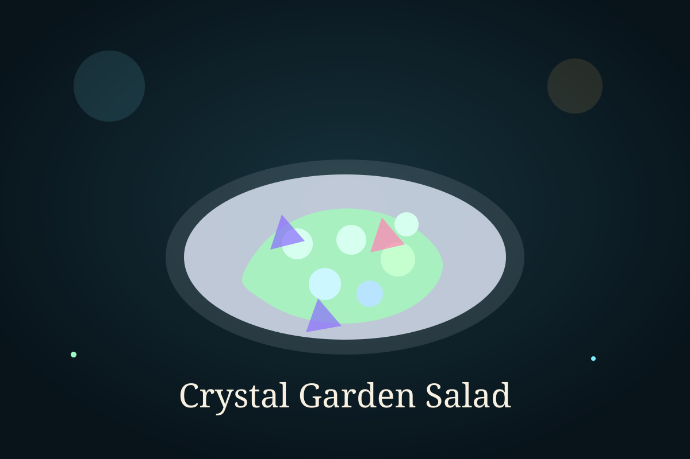

Time Module

Ingredient Vault
Ingredients
- 2 cups lettuce leaves
- 1 cucumber, sliced
- 1 apple, thinly sliced
- 1/2 cup purple cabbage, shredded
- 1/4 cup feta cheese
- 2 tablespoons roasted seeds
- 1 tablespoon olive oil
- 1 tablespoon lemon juice
- Salt and black pepper to taste
Cooking Sequence
Step-by-step instructions
- Wash and dry all the vegetables and fruit properly.
- Place the lettuce, cucumber, apple, and cabbage in a large bowl.
- Sprinkle the feta cheese and roasted seeds over the salad.
- In a small bowl, mix olive oil, lemon juice, salt, and pepper.
- Pour the dressing over the salad just before serving.
- Toss gently so the ingredients stay crisp and fresh.
- Serve immediately for the best texture.